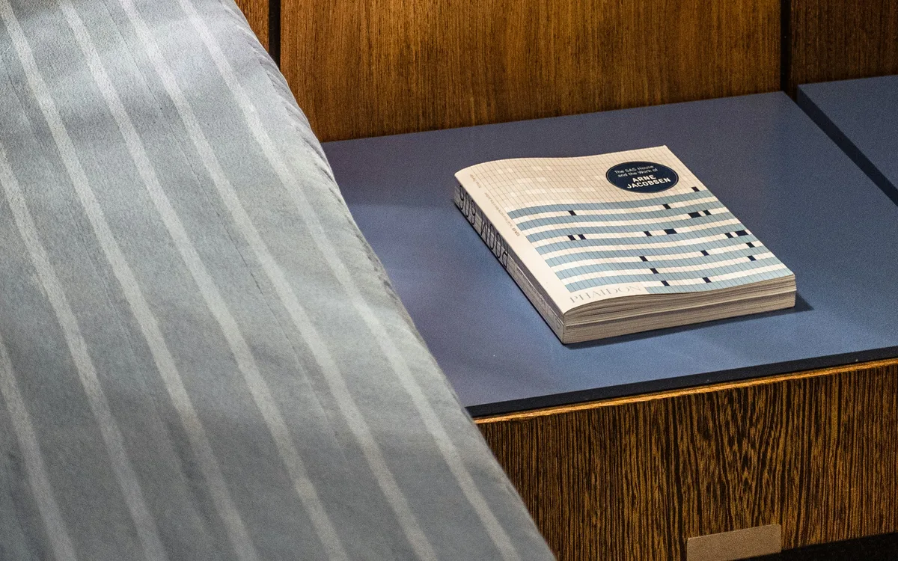
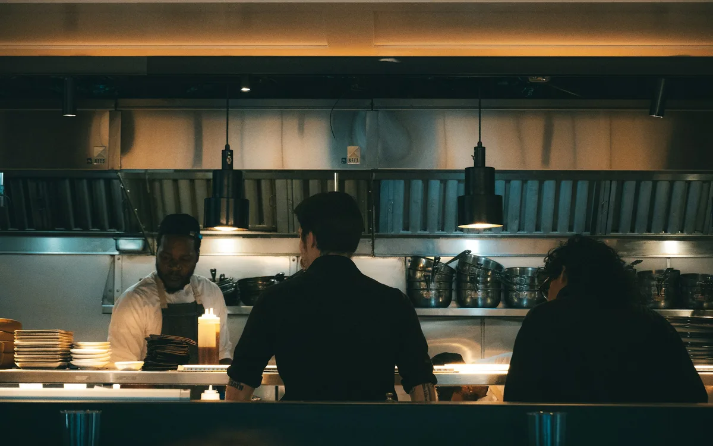

01
Environments & atmosphere
Design, sound, sensory cues, and biophilic elements in service spaces.
How does a setting shape experience?
Consumer behavior · Research & education
Research
My research examines consumer behavior in service settings. I study how the spaces, technologies, and messages people encounter shape their emotions, perceptions, and decisions.
Research interests
Hospitality provides a setting for questions about how people perceive, feel, and decide—from a service space to a digital interaction.
01
Design, sound, sensory cues, and biophilic elements in service spaces.
How does a setting shape experience?
02
Guest acceptance of AI, voice assistants, robots, and digital service, including older adults.
When does technology help?
03
Social media content, AI influencers, video, menus, and how messages drive intention.
What makes a message persuasive?
04
Booking choices, willingness to pay, tipping, and what makes experiences memorable.
How do people make a choice?
Selected research

An experimental study examined how a biophilic hotel lobby affected emotion, peace of mind, and willingness to pay.
Read the lobby design studyInternational Journal of Hospitality Management

A study of guests and hospitality practitioners found greater guest preference for human help with emotionally significant requests.
Read the AI concierge studyJournal of Hospitality and Tourism Technology

A scenario-based study explored how innovation, familiarity, and travel experience influence hotel-room booking preferences.
Read the room aesthetics studyInternational Journal of Hospitality Management

A study of Millennial hospitality employees examined how servant leadership, encouragement of creativity, employee creativity, and intention to stay are connected.
Read the talent retention studyInternational Journal of Contemporary Hospitality Management
Photographs illustrate the research topics; they do not document the studies.
Journal articles, books, chapters, teaching cases, and public scholarship.
Browse all publicationsExplore further
Find the full citations, coauthors, and publisher links in the publication record.
Browse publications →Interested in a shared research question or an academic partnership?
Get in touch →Explore how a study or evidence review could support a decision in your organization.
Research consultation →